k-Day 073｜蒙古很美吧？
早上七點睡醒，外面實在太冷，一直躲在帳篷裡。網路依然沒有訊號，拿出運動相機回顧這幾天拍的影片。看了之後相當洩氣，那根本不是我經過的蒙古。巨大的天空和廣闊的草原，在裡面都只剩下裝在格子裡的劣質複製品。
主要還是我沒有好好調整相機角度的緣故，一般的畫面都是柏油路。在城市裡這麼拍沒啥問題，主要的景色都在跟車身差不多的位置。覺得有些遺憾，沒能拍下那種壯闊感和大家分享。
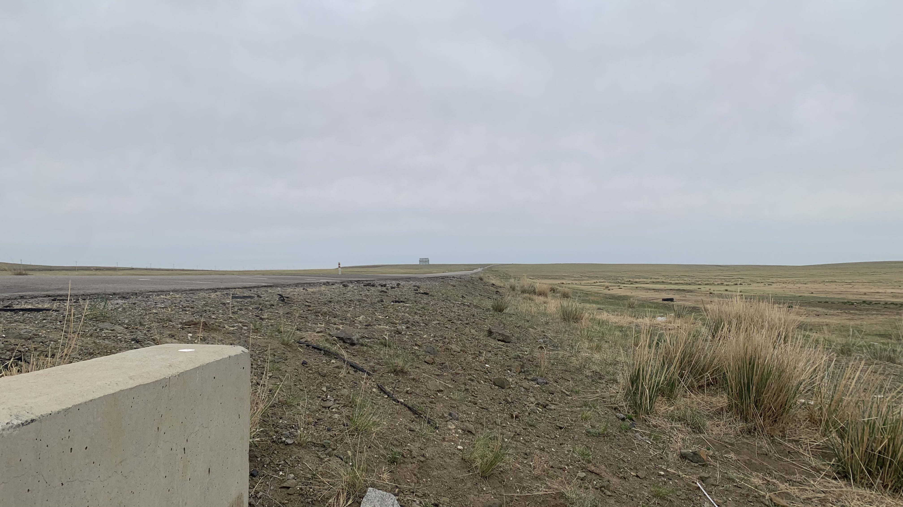
氣溫又回到出合下雪的那天，加上強風帶走的體溫，體感溫度已經是負的。現在沒有刷毛帽保護頭部，似乎有點扛不住早晨的冷風，收拾好裝備，看著該前進的方向發呆。
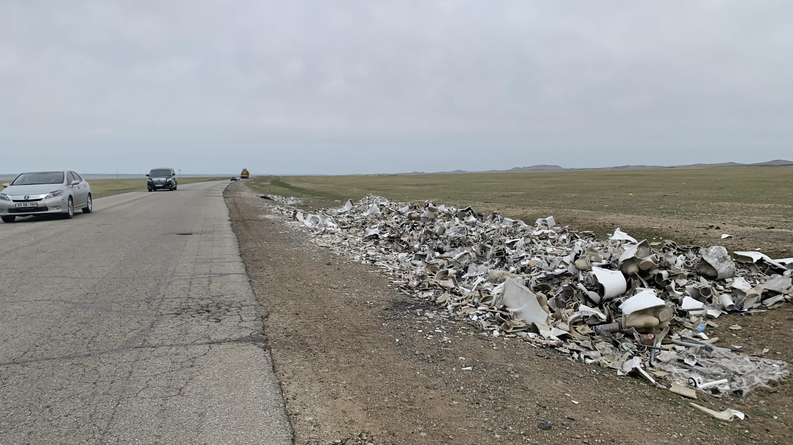
九點半出發沒多久就看到這一幕，今天整天都跟垃圾作伴，有些看來是卡車上掉下來的，更多是酒瓶、碎掉的酒瓶、寶特瓶等等。
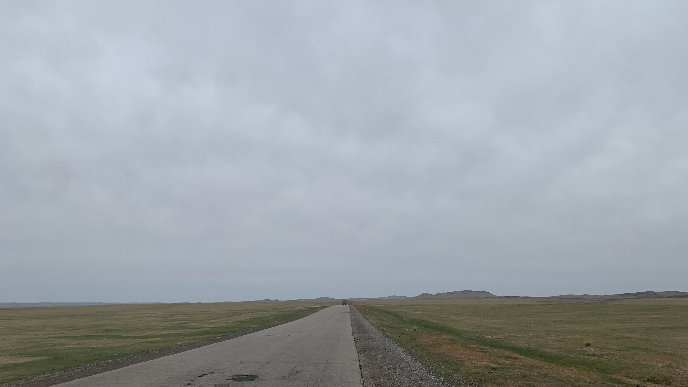
天空的雲層很厚，看來想靠短暫的太陽取暖是奢求了。
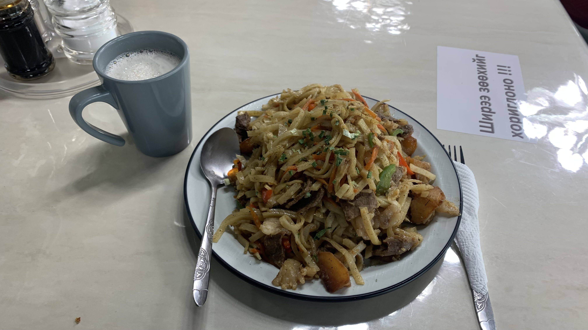
上午十一點經過一間餐廳，點了一盤像麵條的產品，然而味道頗乾，這應該是旅行至今唯一吃不完的一餐。剩下一半想打包帶走，櫃檯拿了餐盒給我，裝上後和我收了1500元。離開時發現餐盒下方是破的，在門口將剩下的麵條裝進密封袋，丟掉了無謂的餐盒。
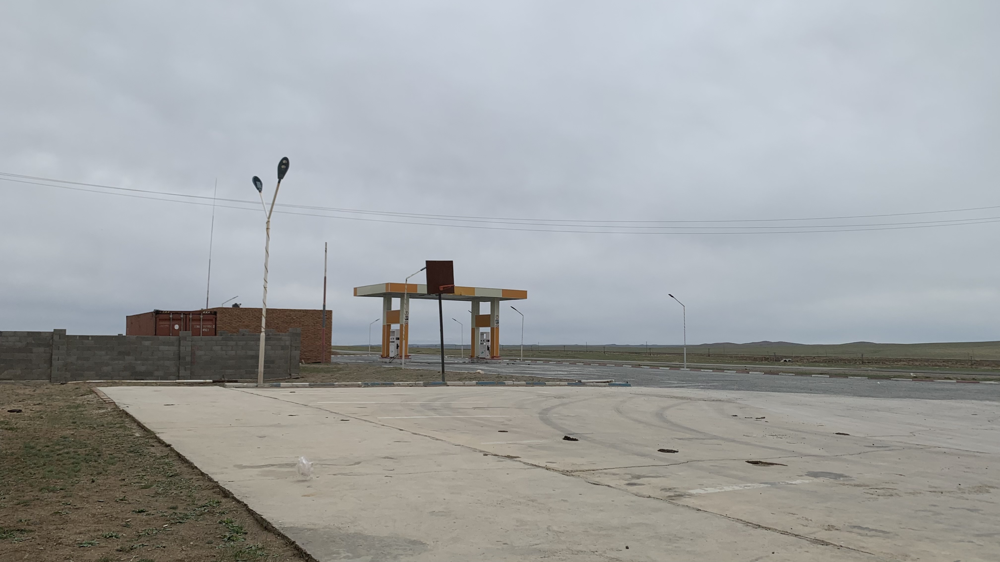
吃飽後好想大便，可是衛生紙已經用光了，剛才的餐廳不提供衛生紙。繞到最近的加油站，空無一人，地上只有牛糞與一個翻飛的孤單塑膠袋。下一個加油站還有七公里，好好撐住啊，括約肌們。
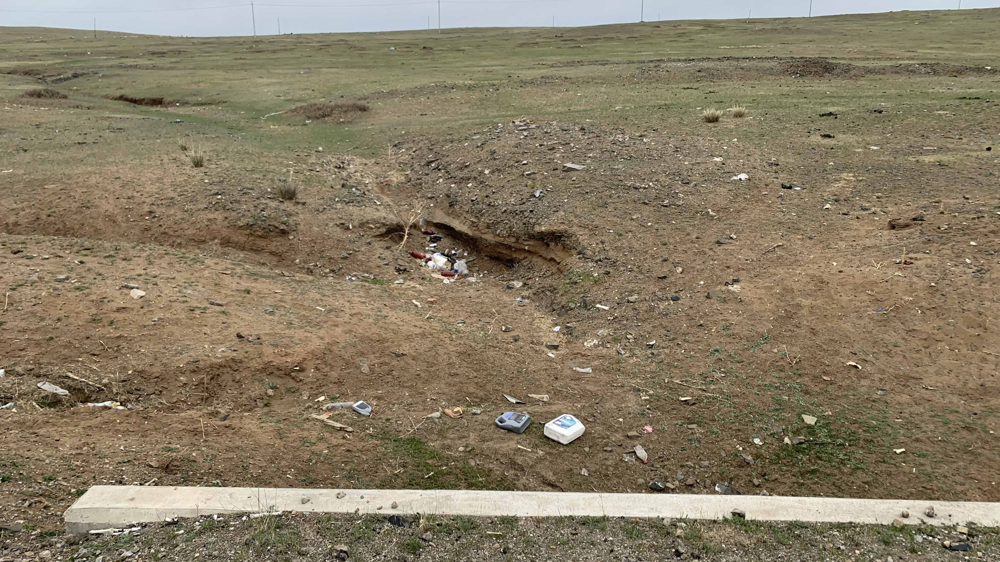
這兩天草綠了，應該多拍照片才是，但是草長出來的同時，垃圾也長出來了。先前一直都是在這水泥條上靠著車坐下，休息喝水，甚至在下方過夜的，現在被垃圾佔滿，有時還有大量廢棄物和刻意丟棄的動物屍體。
從昨天開始就經常被逼車按喇叭，一直自覺地靠著邊緣移動。下午有一陣喇叭聲讓我直覺不對勁，每一聲和我的距離縮短的速度非常快，甚至到最後感覺已經在我肩膀後面了，趕緊跳到路肩的碎石上。幾乎是同一個瞬間，卡車前輪已經從我上一秒站立的地方輾過，絲毫沒有減速。
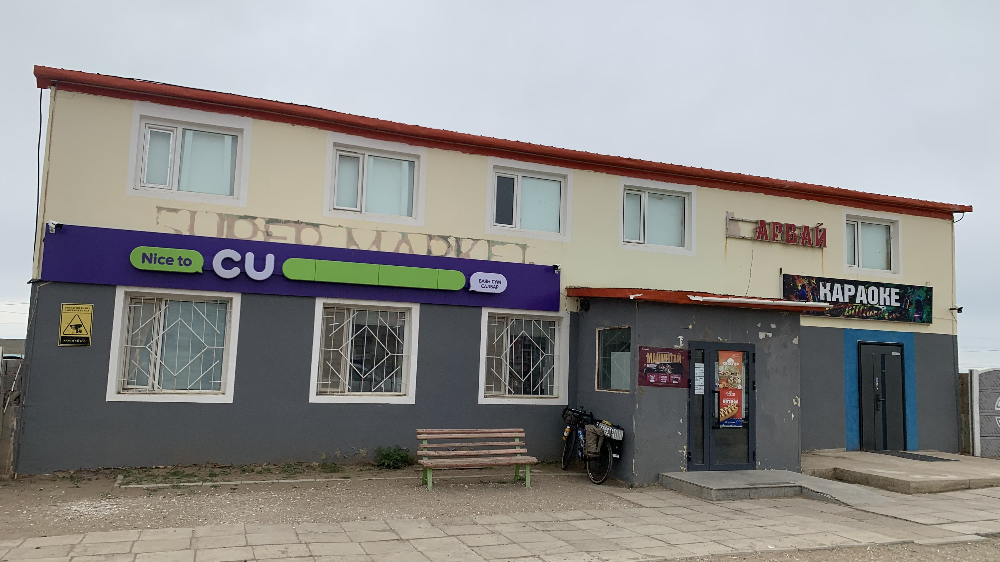
救星是這家CU，裡面有廁所，還有衛生紙。買了濕紙巾和衛生紙，擦了擦黑色的手和臉。又消費一杯咖啡，在裡面坐了半小時，順手幫這家店新增谷歌地標，祝你們生意興隆。
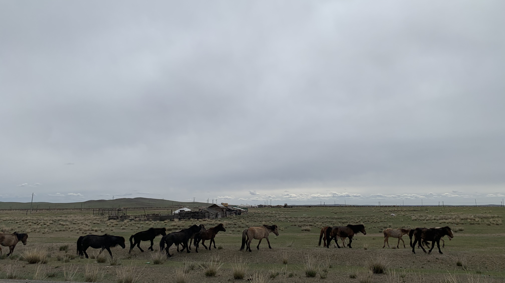
距離Bagakhangai只有14公里左右，本想慢悠悠晃過去，但是吹起順風瞬間就到了。
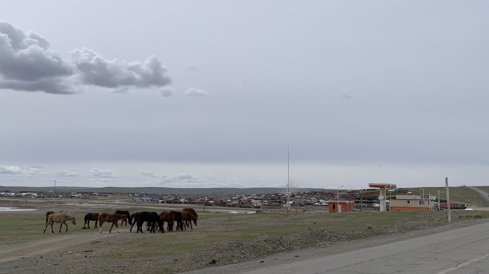
加油站旁沒有車，倒是停了一群馬，相當有喜感。
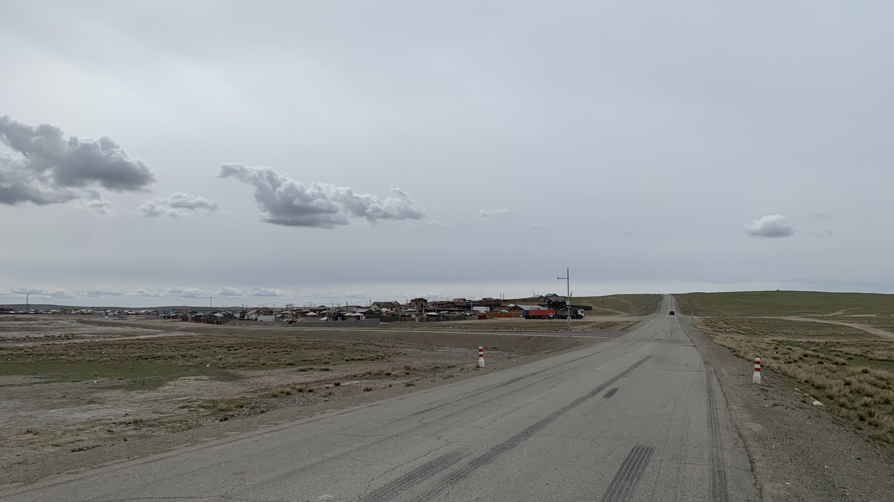
城鎮看來頗具規模，建築和先前在賽音山達和喬伊爾看到的舊蘇聯式不同，錯落地像是日本小鎮。
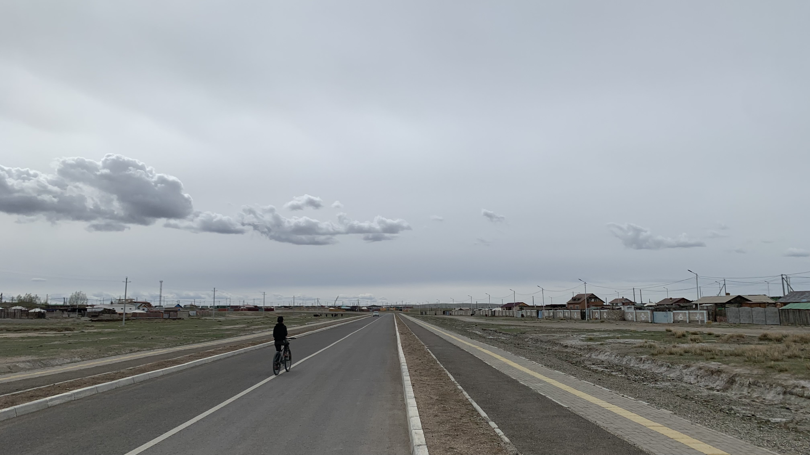
沿著鎮上的主幹道往火車站方向行駛，突然被幾位少年超車。剛剛看到他們在路邊土堆上玩特技，飛了一層樓高。其中一位一邊彈跳一邊蛇行追上我的少年問了一句：「蒙古人？」我回：「台灣！」對方又是一臉茫然「喔～」了一聲。
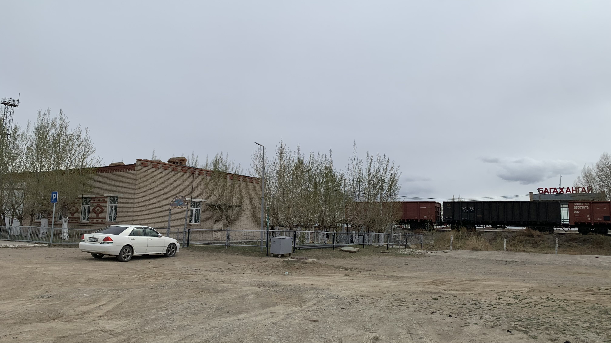
來到火車站外，看不出哪一棟才是本體，牽著車推開旁邊的灰色柵欄，進門就看到橘背心人員的工作站。
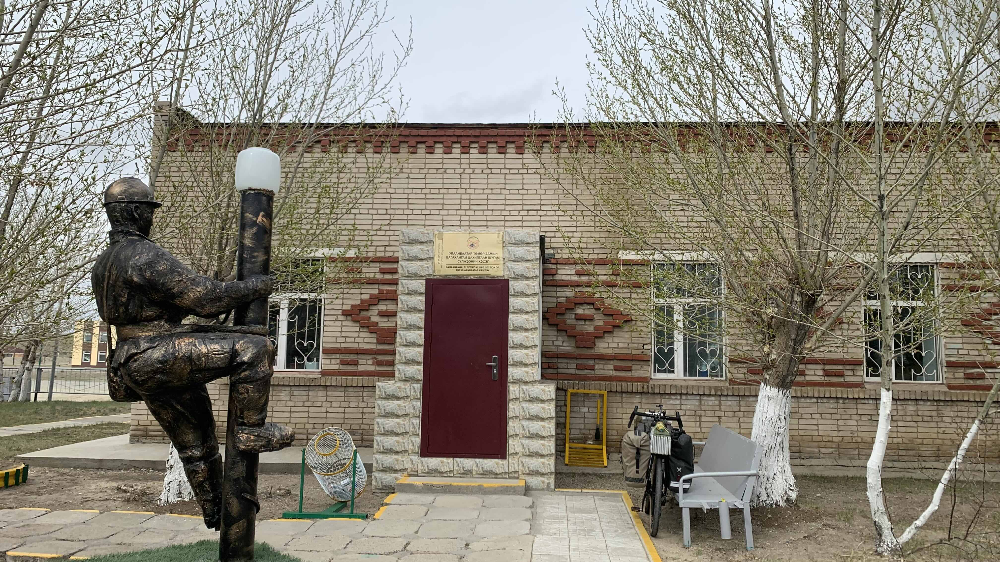
問了能不能讓我在這裡過夜，早上天亮就離開，坐在辦公桌上的男士忙著玩手遊，一位剛煮完飯的女士和我說可以到對面的Vokzal，但是很冷。
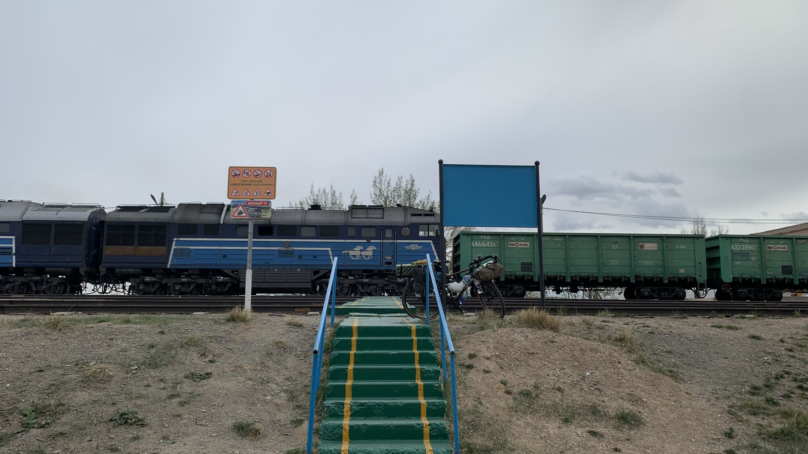
剛好來了一輛運貨的列車，把二十三號靠在欄杆上，抽出羽絨服穿上。女士走上來和我說這裡很冷，先到剛才的休息室等車過了再走到車站，說完就越過鐵軌開始工作。
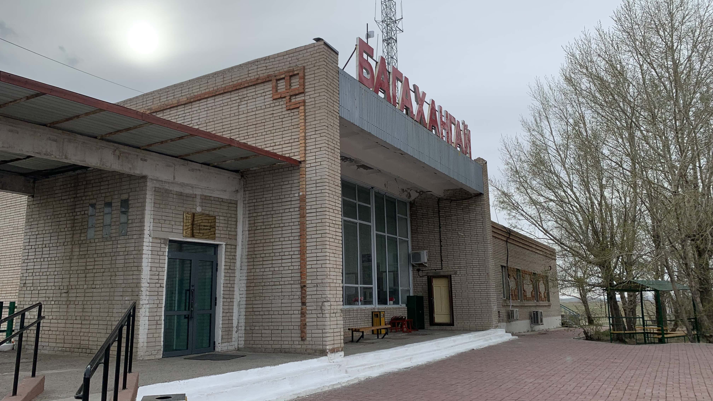
火車走後我倆在鐵軌上又錯身而過，和他說了謝謝，他微笑指了這棟建築說這就是車站，示意可以進去。
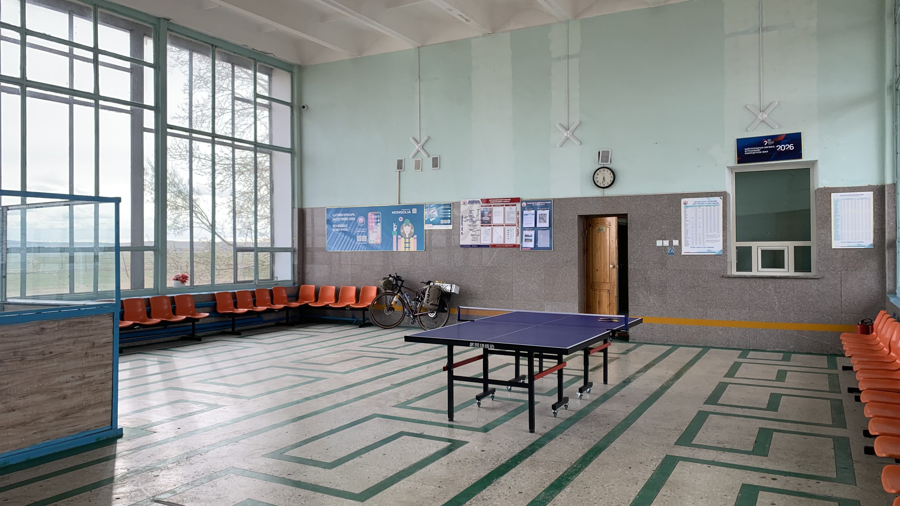
推開兩層木門，裡面的內裝維持地相當不錯。
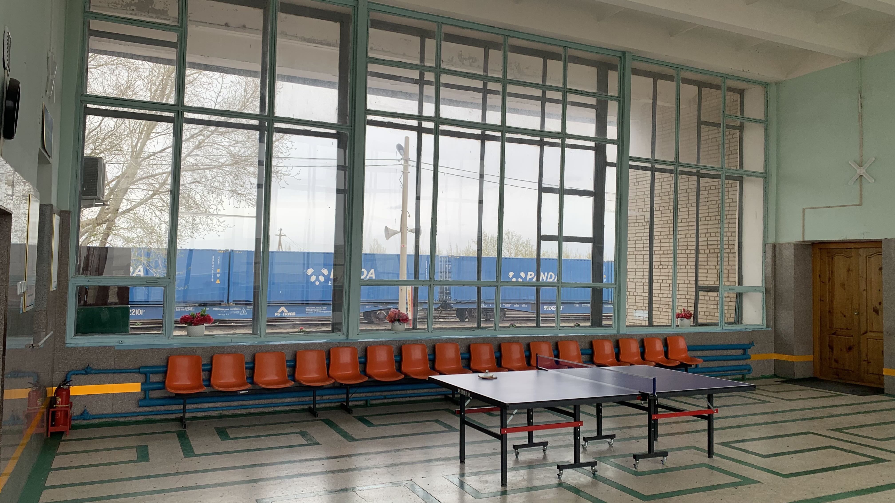
雙層玻璃是東西向的，室內應該有供暖，一坐下就立刻昏昏欲睡。先下樓尋找廁所，果然和前面幾個車站一樣，廁所非常乾淨，衛生紙用的也是優質的。
今天的椅子不太適合睡覺，等天黑了再拿出蛋殼睡墊鋪在地上。這樣下去會不會以為我沿途搭火車旅行呢？
正坐在角落吃零食寫日誌，走來一位工作人員，用手機翻譯和我聊天。不管回答什麼，他都哈哈笑得很開心。看到椅子上放著一杯薯條餅乾，說：「運動完不是該吃些肉嗎？我八點下班，帶你去附近的餐廳吃飯。」
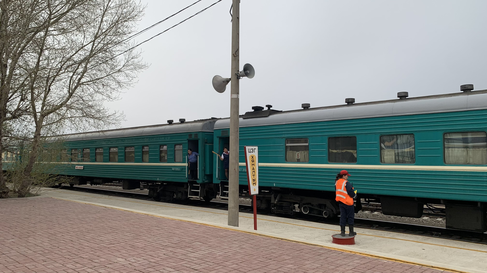
既然如此就先參觀火車進站吧！廣播聲音響起，橘背心站務員走上圓形站台，綠皮火車的玻璃窗內塞著各式躺臥在床上的人類。
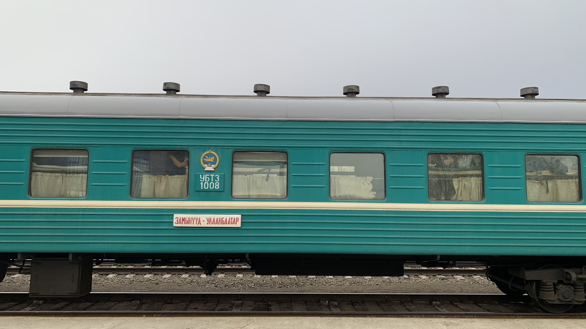
白色床單和窗簾看起來很舒適，不知道裡面的人們在想些什麼呢？
等火車離開後又回到車站內，剛剛找我聊天的原來是車站工程師，我跟他說台灣現在已經很熱了，他於是帶我走到大廳售票處旁的木門內。長長的走廊兩側都是辦公空間，推開左側房門，看來像是機房一樣的空間，隔出一間淺色木質調的辦公室。坐下後他泡了一杯熱茶，丟進一顆方糖，和我說這裡有熱水暖氣，讓我坐在這裡喝。
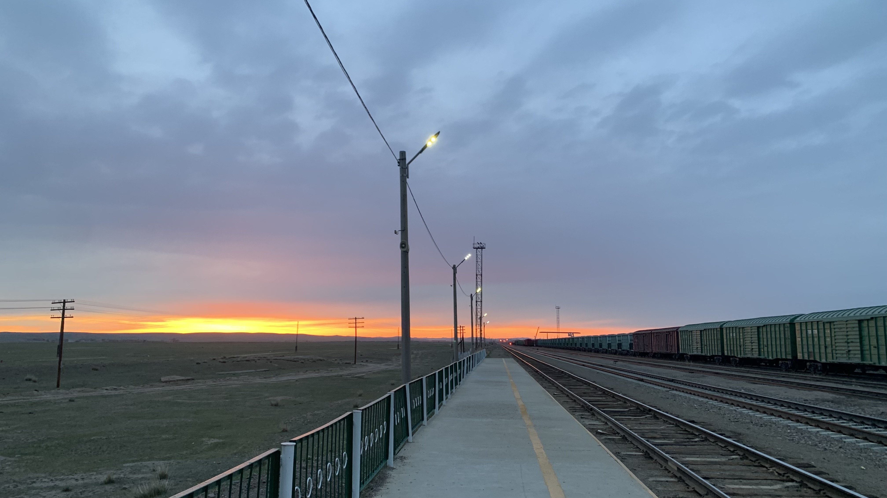
一邊喝茶一邊聊天，他突然問：「蒙古很美吧？」我說：「是全世界最美的國家吧。」
他聽了很開心，又問我：「為什麼睡在車站呢？不冷嗎？」
「因為蒙古的車站很可愛，我很喜歡。」他聽了露出驕傲的表情說：「我們的小車站很漂亮吧！」
期間無論說什麼，他總是一直笑，這還是我到蒙古後第一次看到有人不斷哈哈大笑的。
直到晚上八點，來交班的工程師出現，我坐在桌邊看著兩人交接。等到真正下班已經快九點了。
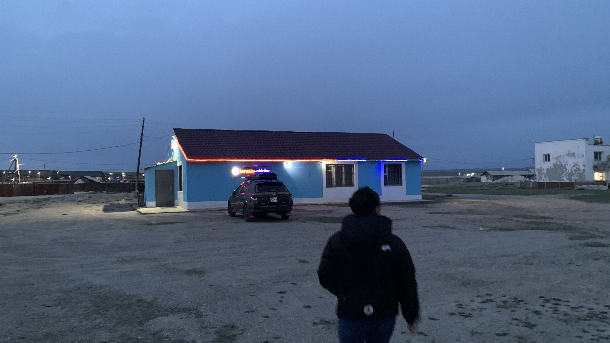
工程師和我說這裡有間餐廳有好吃的雞肉，兩人興高采烈走到餐廳，推開門進去，老闆說已經沒有熱食了，只剩下熱狗堡。
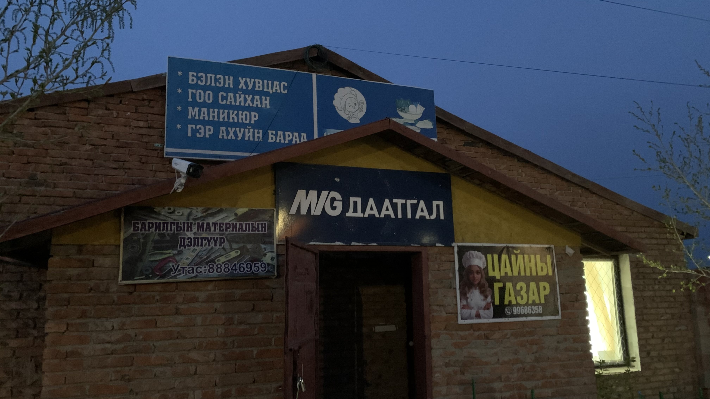
工程師說沒關係，這裡還有另一間餐廳，於是兩人走到第二間餐廳外。門已經上鎖，打了電話詢問，看來是已經打烊的樣子。
我用手機翻譯說沒關係的，我還有零食。工程師就說「好，我帶你去一家很好的超市。」
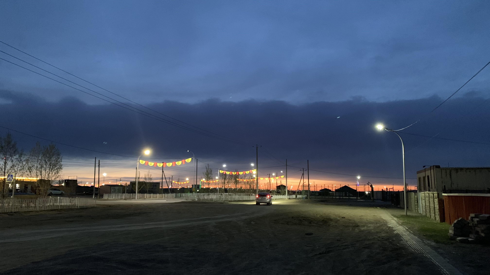
到蒙古後還沒有在這個時間散步，天空的漸層和城鎮裝飾的路燈相當漂亮。
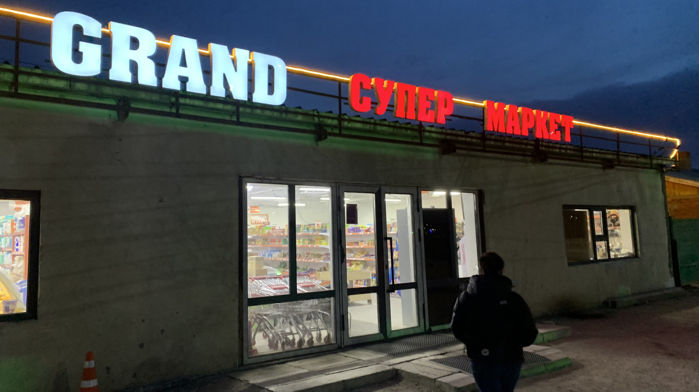
走進超市後，熟食櫃已經被掃光。拿了一瓶蘿蔔汁，付錢後兩人慢慢走回車站。走在路上問他不吃東西嗎？他說他下午六點已吃過晚餐，是想帶我來吃飯的，但是因為他下班太晚，結果讓我沒吃到飯。看起來他對於我在這裡沒吃到人食感到有點遺憾。
回到車站時，剛好有一輛火車進站，兩人在柵欄邊等待。他用手機翻譯問我「真的不餓嗎？」我說：「因為和他聊天很有趣，所以已經不餓了。」他又哈哈哈地笑起來。笑完後很認真地說：「明天就要到烏蘭巴托了，直接進城找一間餐廳吃好吃的肉。祝你旅途順利。」
就這樣兩人回到大廳，又話別了一陣，直到剩下一個人，關上燈攤開睡墊和睡袋，想必又是一夜好眠。
今日花費： 午餐 24000、塑膠盒 1500、咖啡 5500、衛生紙+濕紙巾 5000、芒果汁+薯條零食 5700元